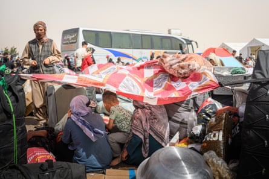

W omen forced back to living under the Taliban’s increasingly repressive regime have spoken of their desperation as Iran accelerates the deportation of an estimated 4 million Afghans who had fled to the country.
In the past month alone, more than 250,000 people, including thousands of lone women, have returned to Afghanistan from Iran, according to the UN’s migration agency. The numbers accelerated before Sunday’s deadline set by the Iranian regime for all undocumented Afghans to leave the country.
The Taliban, who returned to power in 2021, have been accused of enforcing a system of gender apartheid in Afghanistan. Women returning to the country must live with oppressive laws that ban them from showing their faces, speaking or appearing in public, as well as being excluded from most jobs and education. Anyone caught breaking these rules faces public flogging .
An employee of the NGO World Vision assists a woman at an office where deported Afghans can call their family members, 3 July, Islam Qala, Afghanistan.Photograph: Getty Images
Speaking to the Guardian and Zan Times , an Afghan news agency, at a border crossing in southern Afghanistan, Sahar*, 40, is travelling with five children and says she has no idea where she will live now. A widow originally from Baghlan, a city in northern Afghanistan, she had been living in Iran for more than a decade. She ran a small tailoring workshop and had recently put down a deposit on a home. Last week, she says she was detained, taken with her children from a refugee camp near the southern city of Shiraz, and deported.
“I didn’t even get to pack their clothes. They came in the middle of the night. I begged them to give me just two days to collect my things. But they didn’t listen. They threw us out like garbage.”
Until recently, women were rarely forcibly returned from Iran. Men, often undocumented labourers, were more likely to face arrest and deportation. But Afghan border officials say there has been a recent shift, with at least 100 unaccompanied women deported through a single border point in Nimroz province, in the south of the country, between March and May this year.
Returning to Afghanistan without a male guardian puts women in direct conflict with Taliban law, which prohibits women from travelling alone. Many of those returned from Iran find themselves stranded at the border, unable to continue their journey.
With temperatures now reaching 52C, local officials say that a number of people have died during the forced crossings. Border officials say at least 13 bodies have arrived in the past two weeks, but it was not clear whether they had died of heat and thirst or were killed during Israel’s airstrikes in Iran.
Afghans wait for assistance and buses at the Iranian border on 3 July in Islam Qala. Women are unable to continue their journey without a male escort.Photograph: Getty Images
Those arriving at border crossings in southern Afghanistan say they are thirsty, hungry and exhausted, having walked for hours under the sun. Most have no belongings, documentation or plan about where to live.
“From Shiraz to Zahedan [close to the Afghan border], they took everything from us. My bank card had 15 million tomans (£110) . They charged 50,000 tomans for a bottle of water, 100,000 for a cold sandwich. And if you didn’t have it, your child went without,” says Sahar.
The Taliban says it offers short-term shelter and transport assistance to women deported without a mahram (an adult male who can accompany her on a journey). But many returnees say they received no such help. Under Taliban policy, most single women are barred from receiving land, travelling alone to their home province, or accessing employment.
Sahar says her options in Afghanistan are bleak. She has an elderly mother in Baghlan, but no home, no job and no husband, meaning, under Taliban rules, she cannot travel alone or work legally. “I asked for land [from the Taliban], anything to start again. They said, ‘You’re a woman, you have no mahram. You don’t qualify.’”
Deported Afghans wait to receive sim cards at the Iranian border on 3 July in Islam Qala. Many arrive hungry and exhausted, having walked for hours in extreme heat.Photograph: Getty Images
Many end up relying on extended family or informal networks. One woman, recently returned with a newborn, says she was denied food and shelter. “They told me: ‘You’re not eligible. You don’t have a man with you.’ But my baby is just four days old. Where am I supposed to go?”
The UN agency, the International Organization for Migration, and other groups provide temporary aid at border crossings, but they do not have the mandate or resources for long-term support.
In the buses taking deportees from detention to the Afghanistan borders, women also say they are subjected to verbal abuse, bribes demanded for basic services and no air conditioning in extreme heat. “They said it’s a waste for you Afghans. My child cried from the heat, but the driver laughed and mocked us,” says Zahra*.
* Names have been changed
- Kreshma Fakhri contributed to this report.